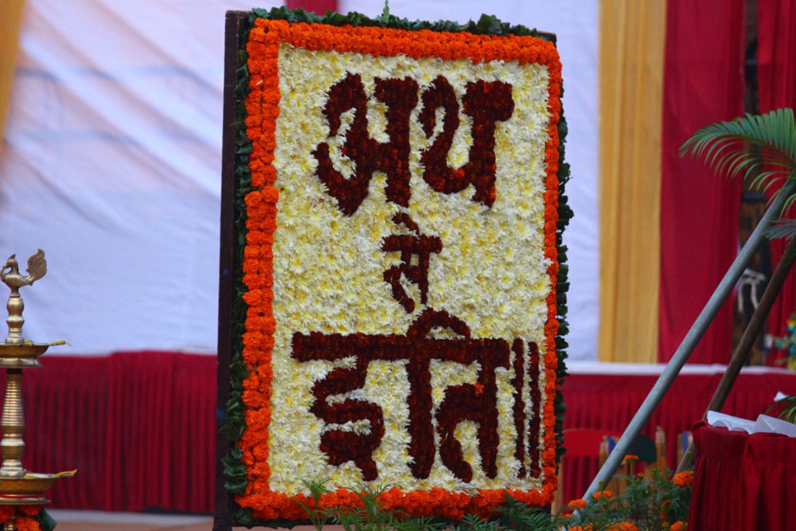
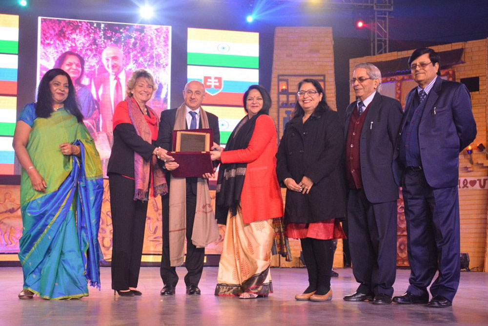

ANNUAL DAY CELEBRATIONS
The school celebrated its Annual Day titled 'Ath se Iti'. The day showcased the talent of more than 1000 students of Class V to XI who creatively displayed the
glory of India from 'then to now'. Mr Zigmund Bertok, Ambassador of Slovakia as the chief guest and Mr Manish Sisodia, Deputy Chief Minister, Govt
Of Delhi as the guest of honour, graced the occasion. Dr (Mrs) Amita Chauhan, Chairperson, Amity Group of Schools applauded the efforts of the children
for bringing alive the ancient times of India and beautifully portraying the civilization and culture.


home<<